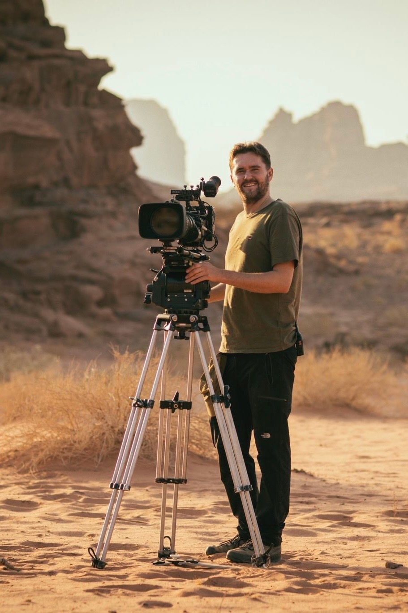

Christian MarotWildlife & Natural History CinematographerLondon · Worldwide
ScrollAbout
Christian Marot is a South London born cinematographer, specialising in wildlife and natural history filmmaking. His experience shooting long lens, macro, drone and time-lapse, alongside human-led sequences, has seen him work on many landmark natural history series for broadcasters such as BBC, National Geographic, Disney+, Netflix and more.

His recent cinematography on the Grierson-nominated Wild London (BBC) with David Attenborough caught the attention of the British public on New Year’s Day: 6.6 million viewers made it the fourth most-watched TV show in the UK in January 2026. His work on Animal Oddballs: Daringly Different was also recognised at Jackson Wild, with a cinematography nomination in August 2026.
Long Lens — Specialist Macro — Motion Control Time-lapse — Aerial — Gimbal — Lighting
Work for
Natural History
Showreel
Public reel
Request the private reelReleased
Projects
Hover to open
Documentary
Human stories
Index
Other work
Commercial, editorial & fine art
Credits
Shoot Diary
Last updated
Released
| Dates | Project | Status |
|---|